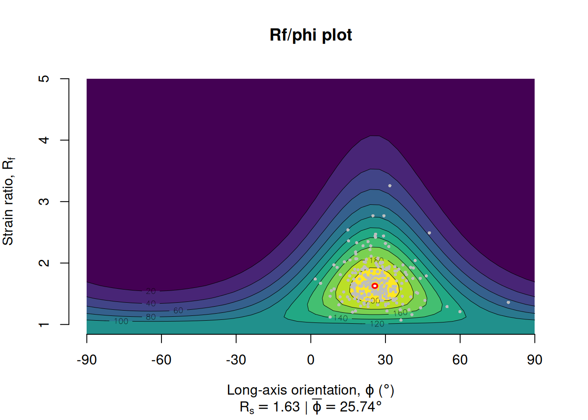
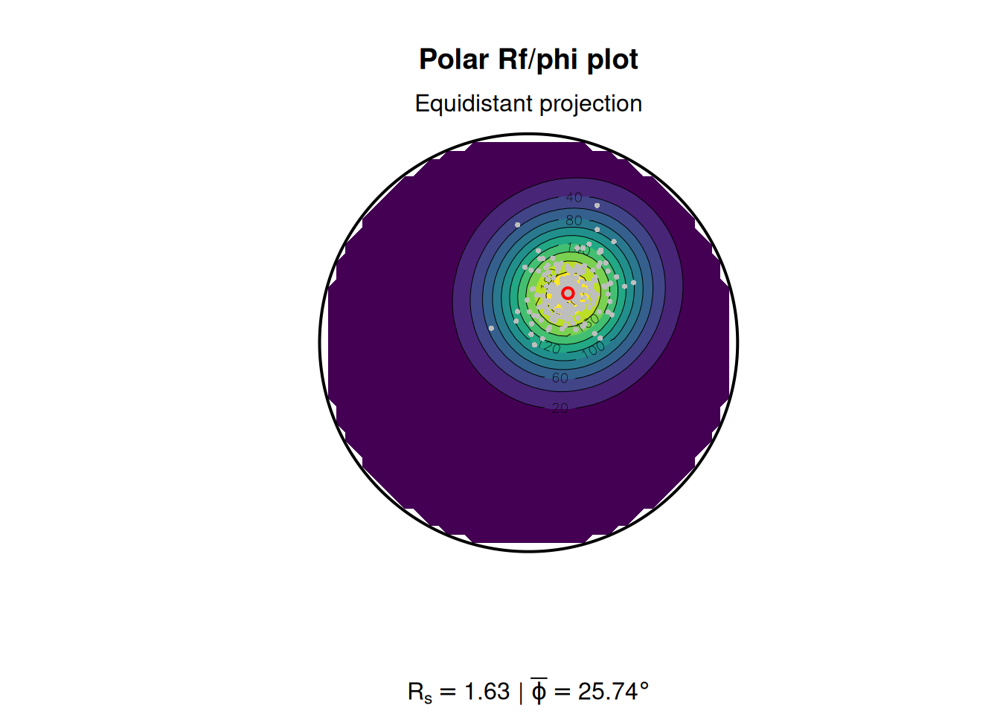
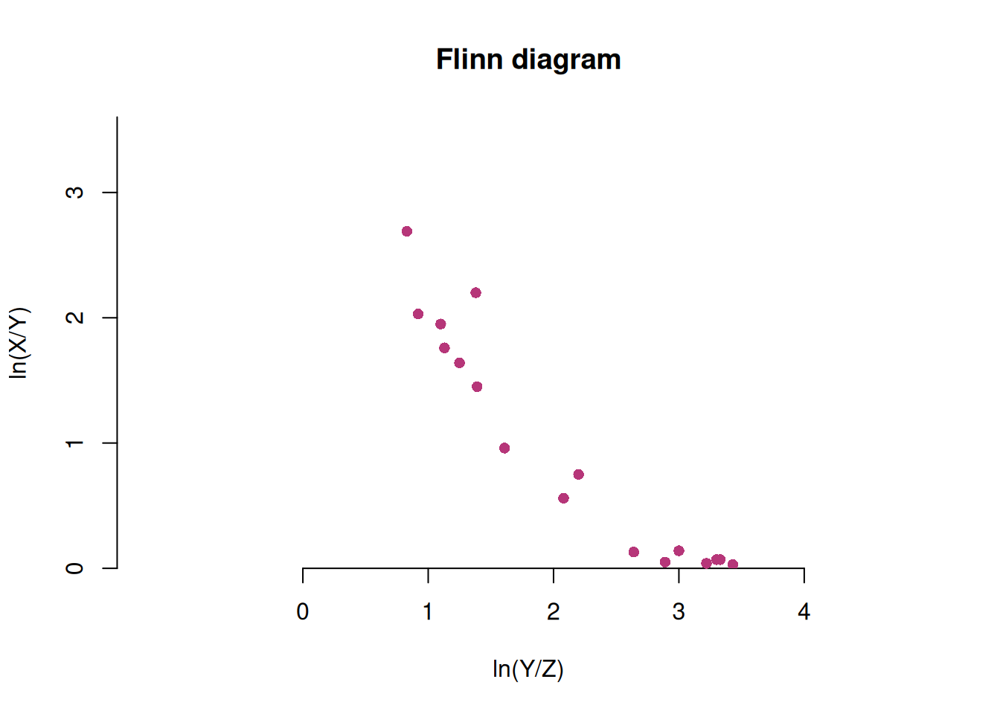
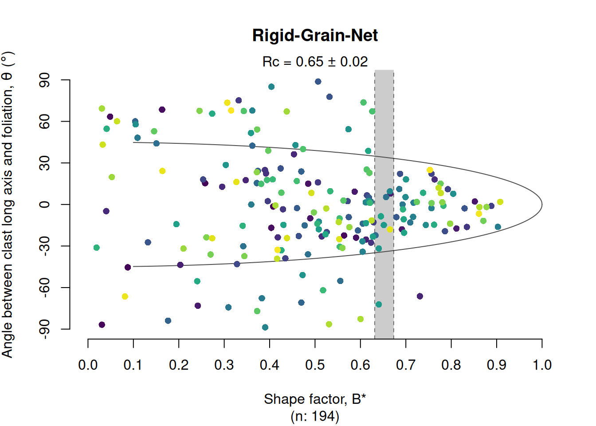

This tutorial demonstrates how to perform strain and vorticity analysis using the {structr} package in R.
Strain analysis
Import some data from elliptical strain markers:
The mean strain ellipse (shape and orientation) of deformed elliptical objects used as strain markers can be calculated from the mean shape matrix and its eigenvalues and eigenvectors1:
ramsay_mean <- mean_strain_ellipse(r = ramsay[, 1], phi = ramsay[, 2])
print(ramsay_mean)
#> $R
#> [1] 1.628138
#>
#> $phi
#> [1] 25.73632
#>
#> $R_CI
#> [1] 1.59275 1.66359
#>
#> $phi_CI
#> [1] 24.71905 26.75180The {structr} algorithm also calculates bootstrapped 95% confidence intervals.
To visualize the distribution of the strain values, we can calculate densities in space2 and plot them in an diagram3:
Rphi_plot(r = ramsay[, 1], phi = ramsay[, 2])
or in an equidistant polar plot4:
Rphi_polar_plot(ramsay[, 1], ramsay[, 2], proj = "eqd")
3D Strain
Three-dimensional strain data are expressed by the ratios of the magnitudes of the three principal axes of the strain ellipsoid, . They can be represented in the Flinn diagram5, either linear or logarithmic:
data("holst")
R_XY <- holst[, "R_XY"]
R_YZ <- holst[, "R_YZ"]
flinn_plot(cbind(R_XY, R_YZ), log = TRUE, col = "#B63679", pch = 16)
or in the Hsu diagram6 using the natural octahedral unit strain7 () and the Lode parameter8 ():
Vorticity analysis
The Rigid Grain Net (Jessup et al., 2007)9 plots the aspect ratio (R) of porphyroclasts against their long-axis orientation with respect to the foliation (phi), on top of the theoretical fields of stable-sink and continuously rotating rigid clasts. The plot estimates the critical aspect ratio that marks the transition between clasts that reach a stable-sink position and clasts that rotate indefinitely. The mean kinematic vorticity number follows from this threshold as . Uncertainties for are estimated using the bootstrap method described in Stephan et al. (2025)10.
data(shebandowan)
set.seed(20250411)
# Color code porphyroclasts by size of clast (area in log-scale):
RGN_plot(shebandowan$r, shebandowan$phi, col = assign_col(log(shebandowan$area)), pch = 16)